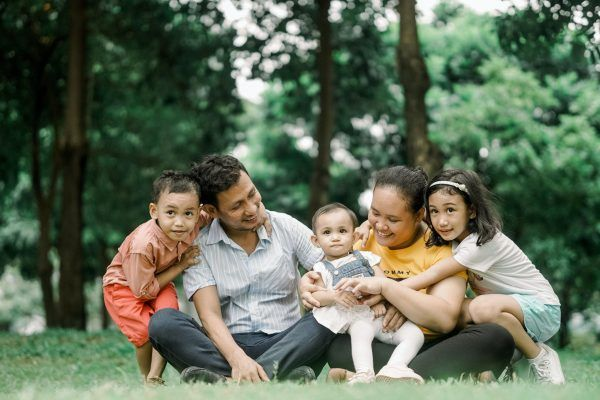
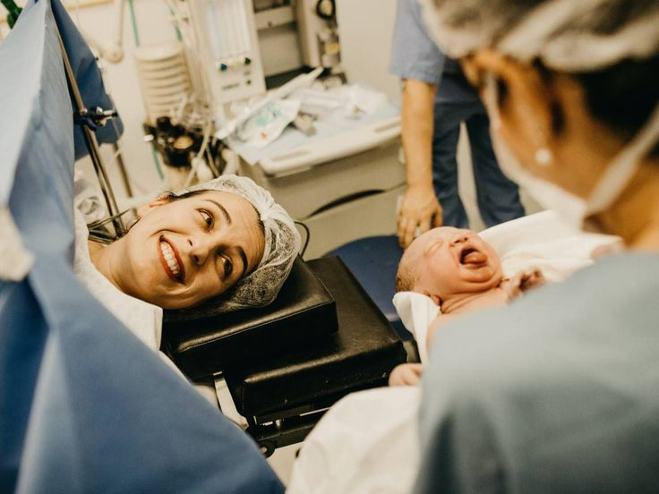
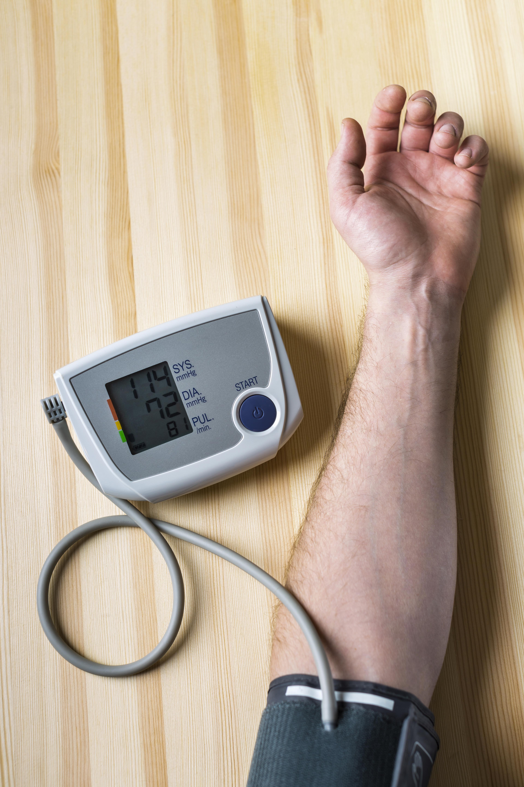
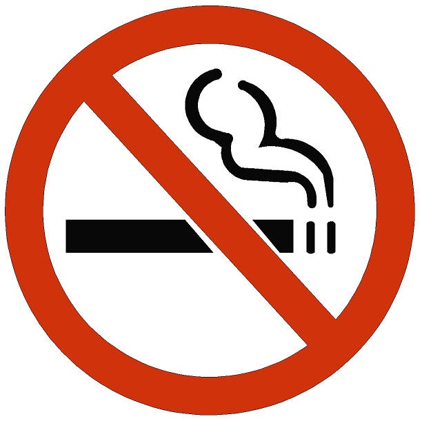
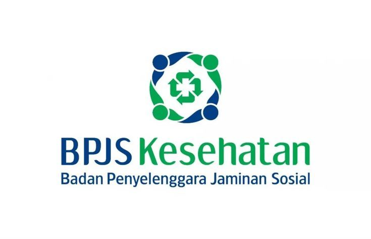
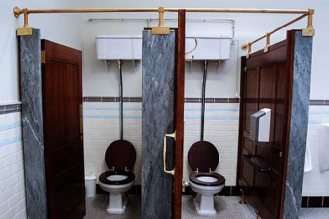

Keluarga mengikuti program KB

Keluarga Berencana (KB) adalah suatu pendekatan yang dirancang untuk membantu pasangan menentukan jumlah anak yang mereka inginkan dan kapan mereka ingin memiliki anak tersebut.
- Tujuan Program KB: Program KB bertujuan untuk mengurangi tingkat kelahiran dan pertumbuhan populasi yang terlalu cepat. Hal ini dapat membantu mengatasi masalah seperti overpopulasi, kemiskinan, kurangnya akses ke pendidikan, kesehatan, dan sumber daya lainnya.
- Pilihan Keluarga: Program KB memberikan keluarga pilihan dalam merencanakan keluarga mereka. Pasangan dapat memutuskan berapa banyak anak yang ingin mereka miliki dan kapan mereka ingin memiliki anak. Ini membantu keluarga untuk merencanakan masa depan mereka dengan lebih baik.
- Dampak Positif: Keluarga yang mengikuti program KB memiliki kontrol lebih besar atas masa depan mereka. Mereka dapat mengatur kelahiran anak sesuai dengan kemampuan mereka, yang dapat membantu meningkatkan kualitas hidup keluarga. Selain itu, program KB dapat membantu mengurangi angka kematian ibu dan anak serta meningkatkan akses keluarga ke pendidikan dan perawatan kesehatan.
- Kesadaran tentang Populasi: Program KB juga meningkatkan kesadaran tentang masalah pertumbuhan populasi dan dampaknya pada lingkungan dan sumber daya alam. Dengan mengendalikan pertumbuhan populasi, program ini dapat membantu menjaga keseimbangan ekosistem.
Program Keluarga Berencana (KB) yang dilaksanakan di kota semarang mendapatkan jumlah presentase Sebanyak 90,62% Dari keluarga yang ada mengikuti program KB
Ini menunjukkan bahwa mayoritas keluarga di wilayah kota Semarang yang terdapat di dalam sampel telah aktif dalam mengikuti program KB untuk mengendalikan pertumbuhan populasi.
Alasan Keluarga Tidak Mengikuti Program KB
- 1.Kurangnya pengetahuan: Kurangnya pengetahuan tentang KB dan metode yang tersedia dapat menjadi alasan.
- 2.Kurangnya Pendidikan Seks: Pendidikan seks yang kurang memadai atau tabu dalam berbicara tentang seks dapat membuat seseorang kurang siap untuk menghadapi pertanyaan tentang KB dan metode yang tersedia.
- 3.Ketakutan terhadap Efek Samping: Beberapa orang mungkin khawatir tentang efek samping dari metode KB, terutama metode hormonal seperti pil KB.
- 4.ilai-nilai Keagamaan: Beberapa orang mungkin memegang keyakinan agama yang melarang atau tidak mendukung penggunaan metode kontrasepsi.
Persalinan Ibu di fasilitas pelayanan kesehatan

Persalinan ibu di fasilitas pelayanan kesehatan merujuk kepada proses kelahiran bayi yang terjadi di tempat-tempat yang disediakan oleh sistem pelayanan kesehatan, seperti rumah sakit atau pusat kesehatan. Ini adalah kontrast dengan persalinan di luar fasilitas pelayanan kesehatan, yang mungkin terjadi di rumah atau tempat lain tanpa bantuan profesional medis.
Keuntungan dari persalinan di fasilitas pelayanan kesehatan meliputi:
-
Akses ke Perawatan Medis Darurat: Fasilitas kesehatan memiliki peralatan medis dan tenaga medis yang dapat menangani situasi darurat yang mungkin terjadi selama persalinan.
-
Pengawasan Profesional: Tenaga medis yang terlatih dapat memantau perkembangan persalinan dan memberikan perawatan yang tepat jika ada komplikasi.
-
Pencegahan dan Pengobatan Infeksi: Fasilitas kesehatan memiliki protokol kebersihan yang ketat untuk mencegah infeksi selama persalinan.
-
Kesiapan untuk Kondisi Darurat: Fasilitas kesehatan dapat merujuk pasien ke fasilitas yang lebih besar jika diperlukan, atau memiliki kemampuan untuk melakukan operasi caesar jika itu adalah pilihan terbaik.
-
Perawatan Pasca-Persalinan: Setelah persalinan, fasilitas kesehatan dapat memberikan perawatan pasca-persalinan, seperti perawatan bayi dan perawatan ibu setelah persalinan.
Di Kota Semarang, data tentang persalinan ibu di fasilitas pelayanan kesehatan menunjukkan bahwa sekitar 99,79% persalinan ibu terjadi di fasilitas kesehatan, mencerminkan tingkat akses dan adopsi perawatan medis yang sangat tinggi di kota tersebut untuk ibu yang melahirkan. Dari total 11,210 kepala keluarga yang berpartisipasi dalam survei tentang persalinan ibu di fasilitas kesehatan, hanya 23 kepala keluarga (KK) melaporkan bahwa persalinan ibu dalam keluarga mereka tidak terjadi di fasilitas kesehatan. Data ini menegaskan bahwa sebagian besar ibu di Kota Semarang menerima perawatan medis yang memadai selama persalinan di fasilitas pelayanan kesehatan, yang sangat penting untuk keselamatan ibu dan bayi.
Alasan Mengapa Masih ada Ibu yang masih melahirkan di luar fasilitas Kesehatan
-
Keterbatasan Akses: Beberapa ibu mungkin tinggal di daerah yang jauh dari fasilitas kesehatan atau sulit diakses karena masalah transportasi. Ini membuat sulit bagi mereka untuk mencapai fasilitas kesehatan pada saat persalinan.
-
Tradisi atau Keyakinan Budaya: Beberapa komunitas mungkin memiliki tradisi atau keyakinan budaya yang mendukung persalinan di rumah atau di lingkungan yang lebih akrab. Mereka mungkin merasa bahwa ini adalah cara yang lebih sesuai dengan nilai-nilai dan praktik budaya mereka.
-
Kurangnya Informasi dan Pendidikan: Beberapa ibu mungkin kurang mendapatkan informasi yang cukup tentang pentingnya persalinan di fasilitas kesehatan atau mengenai risiko persalinan di luar fasilitas medis. Pendidikan yang kurang dapat menghambat kesadaran akan manfaat perawatan medis.
-
Ketakutan atau Stigma: Beberapa ibu mungkin merasa takut atau cemas tentang proses persalinan di fasilitas kesehatan. Stigma atau pengalaman buruk sebelumnya di fasilitas kesehatan juga dapat menjadi faktor yang mempengaruhi keputusan mereka.
Bayi mendapatkan imunisasi dasar lengkap
Bayi mendapatkan imunisasi dasar lengkap adalah proses memberikan serangkaian vaksinasi atau imunisasi kepada bayi sesuai dengan jadwal yang ditentukan oleh program imunisasi nasional atau rekomendasi dari lembaga kesehatan.
Tujuan dari Bayi mendapatkan imunisasi dasar lengkap
-
Melindungi Bayi: Imunisasi dasar lengkap membantu membangun sistem kekebalan bayi, sehingga mereka dapat melawan penyakit-penyakit infeksi yang dapat berdampak serius atau bahkan fatal pada usia dini.
-
Mencegah Penyakit Serius: Imunisasi membantu mencegah penyakit-penyakit seperti campak, polio, difteri, tetanus, pertusis, hepatitis B, dan lainnya, yang dapat menyebabkan komplikasi serius, cacat, atau kematian jika tidak diobati.
-
Mendorong Kesehatan Selama Masa Anak-Anak: Melalui imunisasi, bayi membangun kekebalan awal terhadap penyakit dan melanjutkan perjalanan hidup mereka dengan lebih sehat.
-
Mendukung Kesejahteraan Keluarga: Imunisasi membantu orang tua merasa lebih aman dan yakin tentang kesehatan bayi mereka. Mendorong Kesehatan Selama Masa Anak-Ana
Di Kota Semarang, terlihat tingkat penerimaan Imunisasi Dasar Lengkap yang tinggi dengan sekitar 99,73% bayi menerima imunisasi lengkap, mencerminkan perlindungan imunisasi yang sangat baik bagi sebagian besar bayi di kota tersebut. Kota Semarang menunjukkan komitmen yang kuat terhadap kesehatan bayi, tercermin dari jumlah bayi yang mendapatkan imunisasi dasar lengkap (13,455 bayi) dari jumlah kepala keluarga yang disurvei, yaitu 13,491. Meskipun tingkat imunisasi tinggi, terdapat 36 bayi (0,27%) yang belum menerima imunisasi dasar lengkap. Hal ini menunjukkan perlunya terus memantau dan mencari cara untuk mencapai bayi-bayi ini dan memberikan imunisasi yang diperlukan.
Alasan mengapa beberapa bayi tidak mendapatkan imunisasi dasar lengkap:
-
Beberapa kelurga mungkin tidak memiliki akses yang memadai ke fasilitas kesehatan atau pos pelayanan imunisasi karena jarak, biaya transportasi, atau ketidak tersediaan fasilitas medis di daerah mereka.
-
2.Orang tua atau wali bayi mungkin kurang menyadari pentingnya imunisasi dasar lengkap atau memiliki pemahaman yang salah tentang risiko dan manfaatnya.
-
3.Beberapa orang tua mungkin memiliki kepercayaan salah terkait efek samping imunisasi atau terpengaruh oleh informasi yang tidak benar tentang imunisasi yang membuat mereka ragu.
-
4.Beberapa keluarga mungkin memiliki nilai-nilai budaya atau agama yang menentang imunisasi atau tidak memahami bagaimana imunisasi berkaitan dengan nilai-nilai mereka.
Bayi mendapatkan ASI Eksklusif
ASI eksklusif adalah praktik pemberian Air Susu Ibu (ASI) sebagai satu-satunya sumber makanan bagi bayi, tanpa tambahan makanan atau minuman lain, baik cair maupun padat, selama enam bulan pertama kehidupan bayi.
Manfaat dari pemberian asi eksklusif pada bayi
-
Mengurangi Risiko Obesitas: Praktik ASI eksklusif pada awal kehidupan juga dapat membantu mengurangi risiko obesitas pada masa anak dan dewasa.
-
Manfaat Gizi: ASI eksklusif sangat kaya nutrisi dan antibodi yang melindungi bayi dari penyakit. Ini memberikan bayi semua nutrisi yang diperlukan untuk pertumbuhan dan perkembangan mereka.
-
Perlindungan Kesehatan: ASI eksklusif membantu membangun sistem kekebalan bayi, melindungi mereka dari infeksi, alergi, dan penyakit kronis. ASI juga mengandung antibodi yang membantu melawan infeksi.
-
Hubungan Emosional: Pemberian ASI eksklusif juga memungkinkan ibu dan bayi untuk membina hubungan yang kuat dan mendalam, karena ada interaksi kulit-ke-kulit dan ikatan emosional saat menyusui.
Di Kota Semarang, data menunjukkan tingkat penerimaan ASI eksklusif yang tinggi, mencapai 94,33%. Dari survei yang melibatkan 18,224 bayi, sekitar 17,190 bayi menerima ASI eksklusif, sementara 1,034 bayi menerima makanan tambahan selain ASI. Hal ini menunjukkan bahwa sebagian kecil bayi mungkin diberi makanan tambahan sebelum waktunya atau tidak mendapatkan ASI eksklusif. Data ini menunjukkan bahwa sebagian besar ibu di Kota Semarang menerapkan praktik pemberian ASI eksklusif. Namun, masih ada peluang untuk meningkatkan kesadaran masyarakat tentang pentingnya ASI eksklusif. Peningkatan praktik ASI eksklusif dapat berperan dalam meningkatkan kesehatan dan kualitas hidup bayi di wilayah ini.
Beberapa alasan mengapa beberapa ibu tidak memberikan ASI eksklusif kepada bayi mereka:
-
Keterbatasan Pengetahuan: Beberapa ibu mungkin kurang memiliki pengetahuan tentang manfaat ASI eksklusif atau kurang informasi tentang cara melakukannya dengan benar.
-
Tantangan Pribadi: Beberapa ibu mungkin menghadapi tantangan pribadi, seperti masalah kesehatan ibu atau bayi, yang membuat pemberian ASI eksklusif sulit dilakukan.
-
Kondisi Lingkungan: Faktor seperti dukungan keluarga, jam kerja ibu, dan akses ke fasilitas perawatan medis di lingkungan tempat ibu dan bayi tinggal dapat memengaruhi pemberian ASI eksklusif.
-
Promosi Formula Susu: Tekanan dari promosi produk susu formula atau dari pihak lain untuk menggunakan susu formula dapat memengaruhi keputusan ibu.
Pertumbuhan Balita dipantau

Pertumbuhan balita adalah periode kritis dalam perkembangan anak di usia awal. Memantau pertumbuhan balita adalah proses penting untuk memastikan bahwa anak tumbuh dan berkembang dengan baik. Ini melibatkan pengukuran dan pemantauan berbagai aspek kesehatan dan pertumbuhan anak pada usia 0-5 tahun.
Aspek yang dipantau dalam pertumbuhan balita:
-
Berat Badan: Pengukuran berat badan anak adalah salah satu cara penting untuk memantau pertumbuhan. Perubahan berat badan dapat menjadi indikator kesehatan umum anak.
-
Tinggi Badan: Pengukuran tinggi badan digunakan untuk menentukan pertumbuhan tinggi anak seiring waktu. Pertumbuhan yang tidak normal bisa menjadi tanda masalah kesehatan.
-
Lingkar Kepala: Lingkar kepala juga dipantau sebagai indikator perkembangan otak dan sistem saraf anak. Perubahan yang signifikan dalam lingkar kepala dapat menjadi tanda adanya masalah perkembangan.
-
Lingkar Lengan Atas: Pengukuran lingkar lengan atas dapat memberikan informasi tentang status gizi anak. Anak yang kurang gizi atau obesitas dapat teridentifikasi melalui pengukuran ini.
-
Perkembangan Motorik dan Kognitif: Mengamati perkembangan motorik anak (kemampuan bergerak) dan kognitif (kemampuan berpikir) adalah bagian penting dalam pemantauan pertumbuhan. Perkembangan ini harus sesuai dengan usia anak.
-
Pola Makan: Memantau pola makan anak, termasuk asupan gizi, makanan, dan minuman yang mereka konsumsi, penting untuk memastikan anak mendapatkan nutrisi yang cukup untuk pertumbuhan yang sehat.
Data menunjukkan bahwa di Kota Semarang, tingkat pemantauan pertumbuhan balita tinggi, mencapai sekitar 98,88%. Ini menunjukkan kesadaran akan pentingnya memantau pertumbuhan anak-anak balita. Meskipun tingkat pemantauan tinggi, masih terdapat 782 balita (sekitar 1,12%) yang tidak mendapatkan pemantauan pertumbuhannya dari total 68,782 balita yang seharusnya dipantau pertumbuhannya. Hal ini dapat disebabkan oleh berbagai faktor seperti aksesibilitas ke layanan kesehatan, tingkat kesadaran keluarga, atau hambatan-hambatan lainnya.
Alasan mengapa beberapa balita tidak dipantau pertumbuhannya
-
Ketidaktersediaan Akses: Beberapa keluarga mungkin tidak memiliki akses yang memadai ke fasilitas kesehatan atau program pemantauan pertumbuhan di wilayah kota Semarang
-
Ketidakpahaman atau Kurang Kesadaran: Orang tua atau wali balita mungkin kurang paham mengenai pentingnya pemantauan pertumbuhan
-
Kendala Kesehatan atau Keuangan: Beberapa keluarga mungkin menghadapi kendala kesehatan atau keuangan yang menghambat mereka dalam mengakses layanan pemantauan pertumbuhan dengan baik.
Penderita TB Paru yang berobat sesuai standar

Penderita tuberkulosis (TB) paru yang berobat sesuai standar adalah individu yang menderita infeksi TB paru dan menjalani pengobatan sesuai dengan pedoman yang telah ditetapkan oleh organisasi kesehatan seperti WHO (World Health Organization) dan Kementerian Kesehatan setempat.
Beberapa poin penting yang menjelaskan penderita TB paru yang berobat sesuai standar:
-
Diagnosis yang Tepat: Penderita TB paru biasanya telah didiagnosis dengan baik melalui berbagai tes medis, termasuk tes dahak, radiologi, dan pemeriksaan fisik oleh dokter. Diagnosis yang akurat penting agar pengobatan yang sesuai dapat diresepkan.
-
Pemantauan Kesehatan Rutin: Penderita TB paru yang berobat sesuai standar akan dipantau secara rutin oleh petugas kesehatan, termasuk dokter atau perawat, untuk memastikan bahwa mereka mengikuti regimen pengobatan dengan benar dan tidak mengalami efek samping yang serius.
-
Isolasi dan Pencegahan Penularan: Penderita TB paru yang berobat sesuai standar harus mengikuti langkah-langkah pencegahan penularan. Ini dapat melibatkan isolasi ketika masih dalam fase infeksius untuk mencegah penularan kepada orang lain.
-
Komitmen terhadap Pengobatan: Penderita TB paru yang berobat sesuai standar harus bersedia dan mampu untuk menjalani seluruh regimen pengobatan yang telah ditentukan. Ini termasuk minum obat secara teratur, biasanya setiap hari.
Data menunjukkan tingkat pengobatan penderita TB Paru di Kota Semarang mencapai sekitar 84,58%. Dari survei yang melibatkan 6,479 kepala keluarga penderita TB Paru, sebanyak 5,480 kepala keluarga (sekitar 84,58%) menjalani pengobatan sesuai standar. Hal ini mencerminkan keefektifan sistem perawatan TB Paru di wilayah tersebut. Namun, perlu diperhatikan bahwa masih terdapat 999 kepala keluarga (sekitar 15,42%) penderita TB Paru yang tidak menjalani pengobatan. Hal ini menjadi perhatian karena ketidakpatuhan dalam pengobatan TB Paru dapat menyebabkan penyebaran penyakit yang lebih luas dan meningkatkan risiko komplikasi kesehatan.
Alasan mengapa beberapa penderita TB Paru tidak berobat sesuai standar
-
Ketidaktersediaan Akses: Beberapa penderita mungkin tidak memiliki akses yang memadai ke fasilitas kesehatan atau layanan pengobatan TB.
-
Ketidakpahaman atau Kurang Kesadaran: Beberapa penderita mungkin tidak memiliki pengetahuan yang cukup tentang TB Paru atau pentingnya pengobatan yang konsisten.
-
Tantangan Sosial dan Ekonomi: Faktor sosial dan ekonomi, seperti ketidakstabilan tempat tinggal atau tekanan ekonomi, mungkin membuat sulit bagi beberapa penderita TB Paru untuk menjalani pengobatan yang sesuai.
-
Isu Stigma: Stigma sosial terkait dengan TB Paru bisa menjadi hambatan, membuat beberapa penderita khawatir tentang bagaimana mereka akan diperlakukan oleh masyarakat atau keluarga mereka.
-
Kendala Kesehatan: Beberapa penderita TB Paru mungkin mengalami kendala kesehatan tambahan yang membuat sulit untuk mematuhi pengobatan yang sesuai.
Penderita Hipertensi yang Berobat Teratur di Kota Semarang

Penderita hipertensi yang berobat teratur adalah individu yang telah didiagnosis menderita tekanan darah tinggi (hipertensi) dan secara disiplin mengikuti pengobatan yang telah ditentukan oleh dokter atau tenaga medis terkait.
Beberapa aspek yang menjelaskan penderita hipertensi yang berobat teratur
-
Pengobatan Teratur: Individu ini menjalani pengobatan secara teratur sesuai dengan rekomendasi dokter mereka. Pengobatan ini dapat mencakup obat-obatan yang diresepkan, perubahan gaya hidup, atau kombinasi dari keduanya.
-
Pemeriksaan Berkala: Mereka menjalani pemeriksaan berkala oleh dokter atau petugas kesehatan untuk memantau tekanan darah, mengevaluasi respon terhadap pengobatan, dan memastikan bahwa pengobatan tetap sesuai.
-
Manajemen Gaya Hidup: Selain obat-obatan, penderita hipertensi teratur juga mungkin menerapkan perubahan gaya hidup sehat, seperti diet rendah garam, olahraga teratur, pengelolaan stres, dan penghindaran faktor risiko lain yang dapat mempengaruhi tekanan darah.
-
Kualitas Hidup yang Lebih Baik: Dengan pengobatan teratur dan manajemen yang baik, penderita hipertensi dapat meningkatkan kualitas hidup mereka dan mengurangi risiko komplikasi yang dapat timbul akibat hipertensi yang tidak terkendali.
Di Kota Semarang, data yang diperoleh menunjukkan bahwa jumlah keluarga yang secara konsisten berpartisipasi dalam program berobat teratur mencapai angka 58.141. Informasi ini diperoleh selama pelaksanaan survei, di mana berhasil terkumpul data dari 82.325 kepala keluarga yang dengan tekun mengikuti program berobat teratur yang telah diselenggarakan. Sayangnya, dalam kelompok responden tersebut, terdapat 24.184 kepala keluarga yang tidak berpartisipasi secara teratur dalam program tersebut.
Alasan Ketidak Berobatan penderita hipertensi:
-
Biaya: Perawatan dan obat-obatan untuk hipertensi bisa mahal. Orang yang tidak memiliki akses ke perawatan kesehatan yang terjangkau mungkin kesulitan dalam memenuhi biaya tersebut.
-
Ketakutan atau Kecemasan: Beberapa orang mungkin memiliki ketakutan atau kecemasan terhadap perawatan medis atau prosedur medis. Ini dapat menghambat mereka untuk mencari perawatan yang diperlukan.
-
Penyangkalan: Beberapa individu mungkin menyangkal adanya masalah kesehatan mereka, atau mereka mungkin tidak ingin menghadapi kenyataan bahwa mereka menderita penyakit kronis.
-
Efek Samping Obat: Beberapa obat antihipertensi dapat memiliki efek samping yang tidak diinginkan, seperti pusing, lelah, atau masalah gastrointestinal. Ini dapat membuat beberapa orang enggan untuk mengambil obat mereka secara teratur.
Penderita gangguan jiwa berat, diobati dan tidak ditelantarkan
Penderita gangguan jiwa berat yang diobati dan tidak ditelantarkan adalah individu yang menderita gangguan jiwa serius seperti skizofrenia, gangguan bipolar, atau depresi berat, dan mereka mendapatkan perawatan medis yang tepat serta dukungan yang dibutuhkan.
Berikut adalah beberapa poin yang menjelaskan kondisi ini:
-
Perawatan Medis: Mereka menerima perawatan medis yang sesuai, yang mungkin mencakup penggunaan obat-obatan psikotropika untuk mengontrol gejala. Pengobatan ini harus dipantau oleh dokter secara berkala untuk memastikan efektivitasnya dan mengurangi risiko efek samping.
-
Terapi Psikologis: Selain obat-obatan, terapi psikologis seperti terapi kognitif, terapi perilaku, atau terapi berbicara mungkin diberikan kepada penderita gangguan jiwa berat. Terapi ini membantu mereka dalam mengatasi masalah emosional dan kognitif yang mungkin terkait dengan gangguan tersebut.
-
Dukungan Keluarga dan Sosial: Dukungan dari keluarga dan teman-teman sangat penting dalam pemulihan penderita gangguan jiwa berat. Keluarga dan teman-teman bisa memberikan dukungan emosional, membantu dalam mengelola perawatan, dan menciptakan lingkungan yang stabil.
-
Program Rehabilitasi: Beberapa penderita gangguan jiwa berat mungkin mengikuti program rehabilitasi mental yang dirancang untuk membantu mereka mengembangkan keterampilan sosial, keterampilan hidup sehari-hari, dan kemandirian.
Di Kota Semarang, data yang diperoleh menunjukkan bahwa hanya 39,74% dari penderita gangguan jiwa berat mendapatkan perawatan dan tidak mengalami penelantaran. Sebagian besar penderita gangguan jiwa berat di kota ini belum mendapatkan perawatan yang mereka perlukan. Data juga mencatat bahwa terdapat 647 keluarga dengan anggota penderita gangguan jiwa berat yang menerima perawatan teratur. Jumlah total kepala keluarga yang berpartisipasi dalam survei penderita gangguan jiwa berat di Kota Semarang mencapai 1.628. Dari jumlah responden keluarga tersebut, sebanyak 981 termasuk dalam kelompok yang tidak mendapatkan perawatan dan mengalami penelantaran.
Alasan Ketidak Berobatan penderita gangguan jiwa
-
Stigma Sosial, stigma sosial terhadap gangguan jiwa berat masih menjadi kendala utama, dan masyarakat sering menghindari mencari perawatan karena takut dicap atau diisolasi.
-
Akses Terbatas,terbatasnya akses ke layanan kesehatan mental, terutama di daerah dengan sumber daya terbatas, bisa menjadi hambatan. Ini termasuk kurangnya fasilitas kesehatan mental yang memadai dan biaya tinggi perawatan.
-
Ketidakpahaman, kurangnya pemahaman tentang gangguan jiwa berat, gejalanya, dan pentingnya perawatan dapat membuat individu atau keluarga tidak menyadari perlunya perawatan.
-
Faktor Ekonomi, biaya perawatan gangguan jiwa berat yang tinggi bisa menjadi kendala, terutama bagi keluarga dengan keterbatasan ekonomi.
-
Keterbatasan Sumber Daya, keterbatasan sumber daya pelayanan kesehatan mental, termasuk jumlah tenaga kesehatan mental yang terlatih, dapat mengakibatkan antrian panjang dan rendahnya persentase penderita yang mendapatkan perawatan teratur.
Anggota keluarga tidak ada yang merokok

"Anggota keluarga tidak ada yang merokok" mengindikasikan bahwa tidak ada anggota keluarga di dalam rumah tangga tersebut yang merokok tembakau atau menggunakan produk tembakau. Ini bisa diartikan sebagai tindakan positif untuk menjaga kesehatan dan kesejahteraan anggota keluarga.
Beberapa alasan pentingnya keluarga tidak ada yang merokok
-
Penghematan uang: Merokok adalah kebiasaan yang mahal. Dengan tidak ada yang merokok dalam keluarga, uang yang biasanya dihabiskan untuk pembelian rokok dapat dialokasikan untuk hal-hal yang lebih bermanfaat, seperti pendidikan, rekreasi, atau tabungan.
-
Kualitas udara dalam rumah: Merokok di dalam rumah dapat merusak kualitas udara dan menyebabkan masalah pernapasan bagi semua orang yang tinggal di sana. Dengan tidak ada yang merokok, rumah dapat tetap bersih dan sehat.
-
Kesehatan Anak-anak: Kehadiran asap rokok dapat merugikan anak-anak dalam keluarga. Anak-anak yang terpapar asap rokok berisiko mengalami masalah pernapasan, infeksi telinga, dan gangguan perkembangan lainnya. Tidak ada yang merokok akan melindungi anak-anak dari risiko ini.
-
Mendorong Kesehatan Mental: Berhenti merokok dapat menjadi pencapaian yang besar untuk anggota keluarga yang sebelumnya merokok. Ini dapat meningkatkan kesehatan mental dan rasa harga diri mereka, serta memperkuat ikatan keluarga.
Menurut hasil penelitian yang dilakukan di Kota Semarang, ditemukan bahwa sebanyak 83,84% dari total anggota keluarga yang terlibat dalam survei merupakan individu yang tidak merokok. Ini mencerminkan prevalensi yang tinggi dari non-perokok di antara anggota keluarga di kota tersebut. Data selanjutnya menunjukkan bahwa dari total 344.086 keluarga yang berpartisipasi dalam survei, anggota keluarga yang tidak merokok tercatat sejumlah tersebut. Dalam survei yang sama, terdapat 410.417 Kepala Keluarga yang mengakui merokok di Kota Semarang. Dengan demikian, berdasarkan data ini, dapat disimpulkan bahwa terdapat 66.331 keluarga yang status keterlibatan merokok atau tidaknya tidak dapat dipastikan.
Alasan anggota keluarga masih ada yang merokok
-
Kebiasaan Lama: Merokok sering menjadi kebiasaan sulit diubah, dan anggota keluarga yang sudah lama merokok mungkin kesulitan untuk berhenti.
-
Ketidakpahaman Risiko: Beberapa anggota keluarga mungkin kurang memahami risiko kesehatan yang terkait dengan merokok atau mungkin meremehkan dampaknya.
-
Tekanan Sosial: Faktor lingkungan dan tekanan sosial dari teman, rekan kerja, atau keluarga lainnya dapat memengaruhi keputusan seseorang untuk merokok.
-
Keterbatasan Sumber Daya: Keterbatasan akses ke program berhenti merokok atau bantuan medis untuk berhenti merokok bisa menjadi kendala bagi beberapa anggota keluarga
-
Ketergantungan Nikotin: Ketergantungan fisik dan psikologis pada nikotin membuat berhenti merokok sulit bagi banyak orang.
Keluarga sudah menjadi anggota JKN

"Keluarga sudah menjadi anggota JKN" mengindikasikan bahwa keluarga tersebut telah mendaftar dan terdaftar sebagai peserta dalam program Jaminan Kesehatan Nasional (JKN) di Indonesia. JKN adalah program jaminan kesehatan yang dikelola oleh Badan Penyelenggara Jaminan Sosial (BPJS) Kesehatan.
Manfaat keluarga mengikuti Program JKN
-
Akses Pelayanan Kesehatan: JKN memberikan akses yang lebih mudah dan terjangkau ke berbagai jenis layanan kesehatan, termasuk kunjungan ke dokter, perawatan di rumah sakit, tindakan medis, pelayanan gawat darurat, dan berbagai prosedur medis.
-
Perlindungan Finansial: Salah satu manfaat utama JKN adalah perlindungan finansial terhadap biaya kesehatan yang mungkin timbul. Peserta JKN memiliki biaya pelayanan kesehatan yang lebih terjangkau, dan mereka tidak perlu khawatir akan beban biaya yang besar ketika membutuhkan perawatan medis.
-
Perlindungan Terhadap Kemiskinan: JKN dirancang untuk mengurangi risiko kemiskinan yang disebabkan oleh biaya kesehatan yang tinggi. Dengan memiliki perlindungan finansial, peserta tidak akan terlilit utang medis atau beban finansial yang berlebihan akibat perawatan kesehatan.
-
Perawatan Kesehatan Primer: JKN juga mencakup layanan kesehatan primer seperti kunjungan ke dokter umum dan pemeriksaan kesehatan berkala, yang penting untuk pencegahan dan deteksi dini penyakit.
Dalam analisis data, terungkap bahwa sebanyak 96,40% dari keluarga yang tinggal di Kota Semarang telah melibatkan diri sebagai peserta Jaminan Kesehatan Nasional (JKN). Fakta ini mengindikasikan bahwa sebagian besar warga kota telah mengambil langkah positif dengan menjadi bagian dari program JKN, yang memberikan akses ke layanan kesehatan yang terjangkau. Data yang dikumpulkan mencatat bahwa sebanyak 395.637 keluarga telah resmi terdaftar sebagai anggota JKN , sedangkan total jumlah kepala keluarga yang menjadi subjek survei JKN di Kota Semarang adalah 410.407. Dengan demikian, dapat disimpulkan bahwa terdapat 14.770 keluarga yang belum menjadi peserta aktif dalam program JKN.
Alasan keluarga Belum Terdaftar sebagai Anggota JKN
-
Ketidakpahaman: Meskipun JKN adalah program yang tidak memungut biaya bagi anggotanya, beberapa keluarga mungkin tidak sepenuhnya memahami manfaat dan pentingnya memiliki JKN. Mungkin ada kurangnya pemahaman tentang cara mendaftar atau syarat-syarat yang diperlukan
-
Kendala Administratif: Proses pendaftaran JKN mungkin melibatkan berbagai dokumen dan administrasi tertentu. Keluarga yang tidak memiliki dokumen-dokumen ini atau menghadapi kesulitan dalam mengurus administrasi bisa menghambat pendaftaran.
-
Keterbatasan Akses: Beberapa keluarga mungkin tinggal di daerah terpencil atau sulit dijangkau, sehingga sulit bagi mereka untuk mengakses layanan pendaftaran JKN.
-
Ketidakpahaman Tentang Manfaat: Beberapa anggota keluarga mungkin belum sepenuhnya memahami manfaat kesehatan yang ditawarkan oleh JKN. Diperlukan upaya edukasi lebih lanjut.
-
Masalah Komunikasi: Informasi tentang JKN dan proses pendaftaran mungkin belum tersebar dengan baik di beberapa komunitas, sehingga orang-orang mungkin tidak tahu bagaimana cara mendaftar.
Keluarga memiliki akses/menggunakan sarana air bersih

"Keluarga memiliki akses/menggunakan sarana air bersih" menunjukkan bahwa keluarga tersebut memiliki akses dan menggunakan fasilitas yang menyediakan air bersih atau air minum yang aman dan sehat. Ini adalah hal yang sangat penting untuk kesehatan dan kesejahteraan keluarga.
Manfaat keluarga menggunakan atau memiliki akses air bersih
-
Kesehatan yang Lebih Baik: Air bersih adalah faktor penting dalam menjaga kesehatan individu dan mencegah penyebaran penyakit air. Mengonsumsi air bersih yang aman membantu mencegah diare, kolera, penyakit pernapasan, dan penyakit lain yang terkait dengan air yang terkontaminasi.
-
Higiene yang Lebih Baik: Air bersih memungkinkan individu untuk menjaga kebersihan diri dan lingkungan sekitar. Hal ini mencakup mencuci tangan dengan benar, mandi, mencuci pakaian, dan menjaga sanitasi toilet.
-
Pencegahan Penyakit: Air bersih merupakan langkah pertama dalam pencegahan penyakit yang disebabkan oleh air yang terkontaminasi. Hal ini mencakup penyakit menular seperti diare, kolera, dan infeksi parasit.
-
Lingkungan yang Lebih Bersih: Akses air bersih membantu dalam menjaga kebersihan lingkungan. Ini termasuk pembuangan sampah yang benar dan pengelolaan sanitasi yang lebih baik.
"Hasil analisis data mengungkapkan bahwa tingkat akses dan penggunaan sarana air bersih di Kota Semarang sangat tinggi, mencapai 99,87%. Fakta ini mencerminkan bahwa sebagian besar keluarga di Kota Semarang telah mendapatkan akses dan menggunakan sumber air bersih. Dari data yang terkumpul, tercatat sebanyak 409.853 keluarga yang telah memiliki akses atau menggunakan sarana air bersih. Sementara itu, jumlah kepala keluarga yang berpartisipasi dalam survei sebanyak 410.378. Dengan demikian, dapat disimpulkan bahwa terdapat 523 keluarga yang belum mendapatkan akses atau belum menggunakan sarana air bersih."
Alasan Keluarga Belum Memiliki Akses Air Bersih
-
Masalah Teknis atau Infrastruktur, meskipun sebagian besar keluarga memiliki akses air bersih, masih mungkin ada keluarga yang tinggal di daerah yang sulit dijangkau oleh infrastruktur penyediaan air bersih atau menghadapi masalah teknis dalam mendapatkan air bersih yang layak.
-
Ketidakpahaman, beberapa keluarga mungkin tidak sepenuhnya memahami pentingnya air bersih atau cara memastikan kualitas air yang mereka gunakan. Pendidikan tentang kesehatan lingkungan dapat membantu meningkatkan pemahaman ini.
-
Kemiskinan atau Keterbatasan Sumber Daya, keluarga yang berada dalam kondisi ekonomi yang sulit mungkin memiliki keterbatasan sumber daya untuk memasang atau mempertahankan sistem air bersih yang memadai.
-
Kondisi Geografis, beberapa keluarga mungkin tinggal di daerah pedesaan atau terpencil di mana penyediaan air bersih mungkin lebih sulit.
Keluarga memiliki akses/menggunakan jamban keluarga

"Keluarga memiliki akses/menggunakan jamban keluarga" mengindikasikan bahwa keluarga tersebut memiliki fasilitas jamban atau toilet yang digunakan oleh anggota keluarga untuk tujuan pembuangan limbah manusia.
Manfaat keluarga memiliki fasilitas jamban atau toilet
-
Kebersihan dan Kesehatan: Jamban keluarga merupakan tempat yang higienis dan aman untuk pembuangan kotoran manusia. Ini membantu mencegah penyebaran penyakit yang terkait dengan sanitasi yang buruk, seperti diare, kolera, dan infeksi pernapasan.
-
Pencegahan Penyakit: Dengan penggunaan jamban yang aman, keluarga dapat mencegah penyebaran parasit dan bakteri patogen yang mungkin ada di tinja manusia. Ini merupakan langkah penting dalam pencegahan penyakit.
-
Peningkatan Kualitas Hidup: Dengan akses ke jamban atau toilet, kualitas hidup keluarga meningkat. Mereka dapat menjalani kehidupan yang lebih higienis dan bebas dari risiko penyakit yang terkait dengan sanitasi yang buruk.
-
Pengurangan Pencemaran Lingkungan: Dengan jamban atau toilet yang baik, risiko pencemaran lingkungan, seperti pencemaran air tanah dan sungai dengan tinja manusia, dapat dikurangi. Hal ini mendukung keberlanjutan lingkungan dan kesehatan ekosistem.
Data analisis menunjukkan bahwa persentase keluarga yang memiliki akses atau menggunakan jamban keluarga sangat tinggi, mencapai 99,51%. Hal ini mencerminkan bahwa mayoritas keluarga di Kota Semarang telah memiliki akses atau menggunakan sumber sanitasi yang layak. Dalam angka, terdapat 408.334 keluarga yang telah memiliki akses atau menggunakan jamban keluarga, mencerminkan tingkat kesadaran sanitasi yang baik di sebagian besar masyarakat Kota Semarang (dari total 410.359 kepala keluarga yang berpartisipasi dalam survei penggunaan jamban keluarga). Namun, masih terdapat 2.025 keluarga yang belum memiliki akses yang jelas atau jamban keluarga yang layak. Hal ini merupakan area yang memerlukan perhatian khusus untuk meningkatkan akses sanitasi yang aman bagi semua keluarga.
Alasan Belum Memiliki Akses/Menggunakan Jamban Keluarga
-
Kondisi Ekonomi: Beberapa keluarga mungkin tidak memiliki sumber daya finansial yang cukup untuk membangun atau memperbaiki jamban keluarga, terutama keluarga berpenghasilan rendah.
-
Ketidakpahaman: Pemahaman tentang pentingnya jamban keluarga dan dampak buruk dari tidak memiliki akses yang layak mungkin masih kurang di beberapa keluarga. Pendidikan dan kesadaran masyarakat tentang sanitasi sangat penting.
-
Infrastruktur: Di daerah tertentu, seperti pedesaan atau perkotaan yang tidak terlayani dengan baik oleh infrastruktur sanitasi, bisa menjadi kendala dalam membangun atau menggunakan jamban keluarga.
-
Kendala Lahan: Tidak semua keluarga memiliki lahan yang cukup untuk membangun jamban keluarga. Kendala tanah yang sempit atau kepadatan penduduk tinggi bisa membuat pembangunan jamban menjadi sulit.